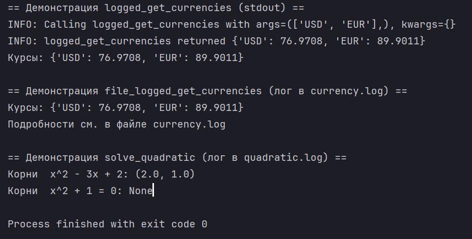
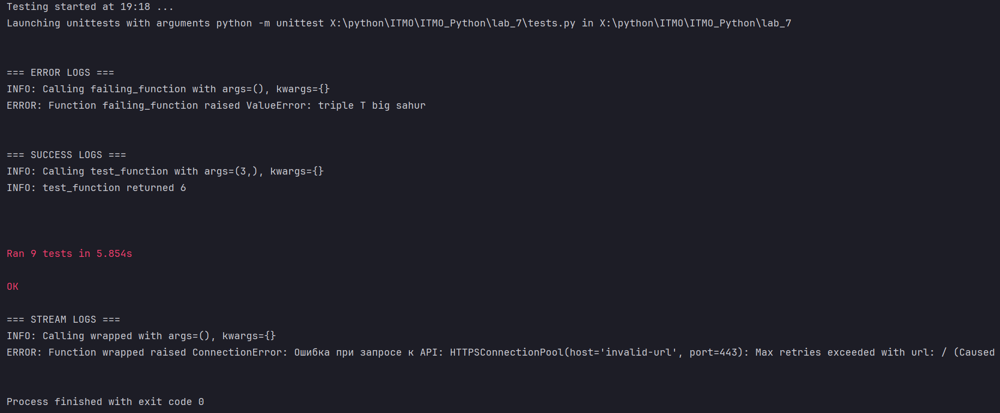
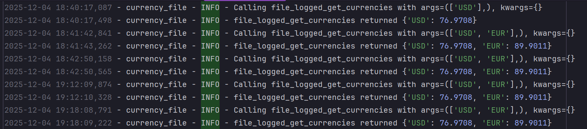
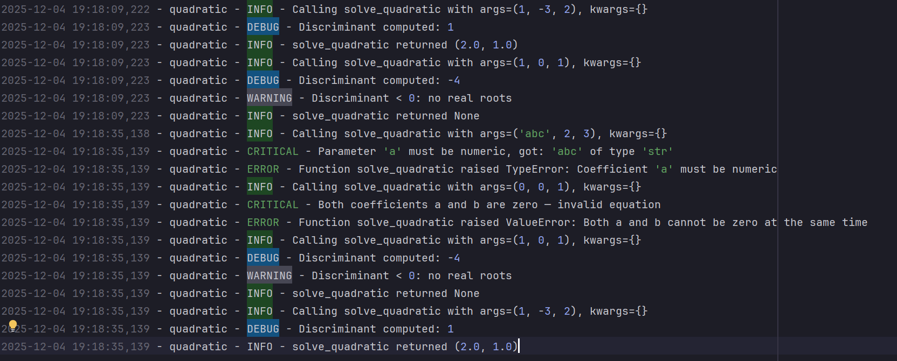

Логирование и обработка ошибок в Python
🎯 Цели работы
- освоить принципы разработки декораторов с параметрами;
- научиться разделять ответственность функций (бизнес-логика) и декораторов (сквозная логика);
- научиться обрабатывать исключения, возникающие при работе с внешними API;
- освоить логирование в разные типы потоков (sys.stdout, io.StringIO, logging);
- научиться тестировать функцию и поведение логирования.
📌 1. Исходный код декоратора logger
def logger(func: FuncType | None = None, *,
handle: LoggerOrStream = sys.stdout) -> FuncType:
"""
Декоратор для логирования вызовов функций.
Поддерживает три варианта аргумента ``handle``:
1. Обычный поток вывода (по умолчанию): ``sys.stdout``.
2. Любой файловый поток (например, ``io.StringIO()``).
3. Объект ``logging.Logger``.
Вариант выбирается автоматически:
* если ``handle`` является экземпляром ``logging.Logger``,
то используются методы ``info()`` и ``error()``;
* иначе предполагается, что это файловый поток с методом ``write()``.
При вызове функции логируются:
* INFO: старт вызова + аргументы;
* INFO: успешное завершение + результат.
При возникновении исключения:
* ERROR: тип и текст исключения;
* исключение пробрасывается дальше без изменения типа.
Параметризуемый декоратор: может использоваться как
``@logger`` и как ``@logger(handle=...)``.
"""
def _decorate(fn: FuncType) -> FuncType:
if isinstance(handle, logging.Logger):
info = handle.info
error = handle.error
else:
def info(message: str) -> None:
handle.write(f"INFO: {message}\n")
def error(message: str) -> None:
handle.write(f"ERROR: {message}\n")
@functools.wraps(fn)
def wrapper(*args: Any, **kwargs: Any) -> Any:
info(f"Calling {fn.__name__} with args={args}, kwargs={kwargs}")
try:
result = fn(*args, **kwargs)
except Exception as e:
error(
f"Function {fn.__name__} raised {type(e).__name__}: {e}"
)
raise
else:
info(f"{fn.__name__} returned {result!r}")
return result
return wrapper
if func is None:
return _decorate
return _decorate(func)
````
Полный код см. в файле `logging_utils.py`.
---
## 📌 2. Исходный код функции `get_currencies`
Функция содержит только бизнес-логику.
Все исключения должны выбрасываться наружу, а логирование выполняет декоратор.
```python
def get_currencies(
currency_codes: Iterable[str],
url: str = "https://www.cbr-xml-daily.ru/daily_json.js",
timeout: float = 5.0,
) -> dict[str, float]:
"""
Получить курсы указанных валют с API ЦБ РФ.
Параметры
---------
currency_codes:
Итерируемый объект с символьными кодами валют
(например, ['USD', 'EUR']).
url:
URL API ЦБ РФ или тестовый URL.
timeout:
Таймаут HTTP-запроса в секундах.
Возвращает
----------
dict[str, float]
Словарь вида {"USD": 93.25, "EUR": 101.7}.
Исключения
----------
ConnectionError
Если API недоступен или произошла сетевая ошибка.
ValueError
Если ответ не удаётся распарсить как корректный JSON.
KeyError
Если отсутствует ключ ``"Valute"`` или указанная валюта.
TypeError
Если курс валюты имеет некорректный тип (не число).
"""
try:
response = requests.get(url, timeout=timeout)
response.raise_for_status()
except requests.exceptions.RequestException as e:
raise ConnectionError(f"Ошибка при запросе к API: {e}") from e
try:
data = response.json()
except ValueError as e:
raise ValueError("Некорректный JSON в ответе API") from e
try:
valute_dict = data["Valute"]
except KeyError as e:
raise KeyError('В ответе JSON отсутствует ключ "Valute"') from e
result: dict[str, float] = {}
for code in currency_codes:
try:
currency_info = valute_dict[code]
except KeyError as e:
raise KeyError(f"Валюта {code!r} отсутствует в данных API") from e
value = currency_info.get("Value")
if not isinstance(value, (int, float)):
raise TypeError(
f"Курс валюты {code!r} имеет неверный тип:"
f" {type(value).__name__}"
)
result[code] = float(value)
return result
📌 3. Демонстрационный пример: решение квадратного уравнения
Функция логирует:
- INFO — начало/конец вызова (через декоратор);
- WARNING — дискриминант < 0;
- ERROR / CRITICAL — некорректные параметры.
@logger(handle=quad_logger)
def solve_quadratic(a: float, b: float, c: float) -> tuple[float, ...] | None:
"""
Решить квадратное уравнение ``a * x^2 + b * x + c = 0``.
Логирование:
* INFO — старт/конец (обрабатывается декоратором);
* WARNING — дискриминант < 0 (нет действительных корней);
* ERROR/CRITICAL — некорректные данные
(через декоратор и дополнительно внутри функции).
"""
for name, value in zip(("a", "b", "c"), (a, b, c)):
if not isinstance(value, (int, float)):
quad_logger.critical(
f"Parameter {name!r} must be numeric, got:"
f" {value!r} of type {type(value).__name__!r}")
raise TypeError(f"Coefficient '{name}' must be numeric")
if a == 0 and b == 0:
quad_logger.critical(
"Both coefficients a and b are zero — invalid equation")
raise ValueError("Both a and b cannot be zero at the same time")
if a == 0:
quad_logger.error("Coefficient 'a' is zero — equation is not quadratic")
raise ValueError(
"Coefficient 'a' cannot be zero for quadratic equation")
d = b * b - 4 * a * c
quad_logger.debug(f"Discriminant computed: {d}")
if d < 0:
quad_logger.warning("Discriminant < 0: no real roots")
return None
if d == 0:
x = -b / (2 * a)
return (x,)
x1 = (-b + math.sqrt(d)) / (2 * a)
x2 = (-b - math.sqrt(d)) / (2 * a)
return x1, x2
def demo() -> None:
"""Небольшая демонстрация работы функций при запуске файла напрямую."""
print("== Демонстрация logged_get_currencies (stdout) ==")
try:
rates = logged_get_currencies(["USD", "EUR"])
print("Курсы:", rates)
except Exception as e:
print("Ошибка при получении курсов:", e)
print(
"\n== Демонстрация file_logged_get_currencies (лог в currency.log) ==")
try:
rates = file_logged_get_currencies(["USD", "EUR"])
print("Курсы:", rates)
print("Подробности см. в файле currency.log")
except Exception as e:
print("Ошибка при получении курсов:", e)
print("\n== Демонстрация solve_quadratic (лог в quadratic.log) ==")
try:
print("Корни x^2 - 3x + 2:", solve_quadratic(1, -3, 2))
print("Корни x^2 + 1 = 0:", solve_quadratic(1, 0, 1))
except Exception as e:
print("Ошибка при решении квадратного уравнения:", e)
📌 4. Примеры логов
✔ 4.1 Логирование в stdout
(Скриншот из демонстрации)

✔ 4.2 Логирование в тестах

📌 5. Тестирование
Тесты находятся в файле tests.py.
✔ 5.1 Тесты функции get_currencies
Проверяют:
- корректность полученного курса;
- выброс
KeyErrorдля отсутствующей валюты; - выброс
ConnectionErrorпри неверном URL.
class TestGetCurrencies(unittest.TestCase):
"""Тесты бизнес-логики функции get_currencies."""
def test_real_usd_rate(self) -> None:
"""Проверяем, что курс USD возвращается и имеет разумное значение."""
data = get_currencies(["USD"])
self.assertIn("USD", data)
self.assertIsInstance(data["USD"], float)
self.assertGreaterEqual(data["USD"], 0.0)
self.assertLessEqual(data["USD"], MAX_RATE_VALUE)
def test_missing_currency_raises_key_error(self) -> None:
"""Неизвестная валюта должна вызывать KeyError."""
with self.assertRaises(KeyError):
get_currencies(["NON_EXISTENT_CURRENCY_CODE"])
def test_connection_error(self) -> None:
"""
Неверный URL должен приводить к ConnectionError.
В реальном тесте лучше мокать requests.get,
но для простоты используем заведомо некорректный URL.
"""
with self.assertRaises(ConnectionError):
get_currencies(["USD"], url="https://invalid-url")
✔ 5.2 Тестирование декоратора logger через StringIO
Проверяются:
- логи INFO при успешном вызове,
- логи ERROR при исключениях,
- проброс исключений без потери типа.
class TestLoggerDecorator(unittest.TestCase):
"""Тестирование поведения декоратора logger через io.StringIO."""
def setUp(self) -> None:
self.stream = io.StringIO()
@logger(handle=self.stream)
def test_function(x: int) -> int:
return x * 2
@logger(handle=self.stream)
def failing_function() -> None:
raise ValueError("triple T big sahur")
self.test_function = test_function
self.failing_function = failing_function
def test_logging_success(self) -> None:
"""При успешном выполнении должны быть INFO-логи о старте и завершении."""
result = self.test_function(3)
self.assertEqual(result, 6)
logs = self.stream.getvalue()
self.assertIn("INFO:", logs)
self.assertIn("Calling test_function", logs)
self.assertIn("returned 6", logs)
print("\n=== SUCCESS LOGS ===")
print(logs)
def test_logging_error_and_exception_propagation(self) -> None:
"""При ошибке должен быть ERROR и исключение проброшено дальше."""
with self.assertRaises(ValueError):
self.failing_function()
logs = self.stream.getvalue()
self.assertIn("ERROR:", logs)
self.assertIn("ValueError", logs)
self.assertIn("triple T big sahur", logs)
print("\n=== ERROR LOGS ===")
print(logs)
✔ 5.3 Тест контекстного вызова из задания
Проверяется, что декоратор логирует ошибку при недоступном API.
class TestStreamWriteExample(unittest.TestCase):
"""
Пример теста с контекстом из задания.
Используем декоратор logger и StringIO.
"""
def setUp(self) -> None:
self.stream = io.StringIO()
@logger(handle=self.stream)
def wrapped() -> dict[str, float]:
return get_currencies(["USD"],
url="https://invalid-url")
self.wrapped = wrapped
def test_logging_error(self) -> None:
"""Проверяем, что ошибка логируется и исключение пробрасывается."""
with self.assertRaises(ConnectionError):
self.wrapped()
logs = self.stream.getvalue()
self.assertIn("ERROR:", logs)
self.assertIn("ConnectionError", logs)
print("\n=== STREAM LOGS ===")
print(logs)
✔ 5.4 Тесты функции solve_quadratic
Проверяются:
- два корня,
- отсутствие корней при d < 0,
- ошибки при некорректных параметрах.
class TestSolveQuadratic(unittest.TestCase):
"""Краткая проверка solve_quadratic."""
def test_two_roots(self) -> None:
"""Уравнение x^2 - 3x + 2 = 0 имеет два корня: 1 и 2."""
roots = solve_quadratic(1, -3, 2)
self.assertIsNotNone(roots)
self.assertAlmostEqual(sorted(roots)[0], 1.0)
self.assertAlmostEqual(sorted(roots)[1], 2.0)
def test_negative_discriminant(self) -> None:
"""При d < 0 возвращается None."""
roots = solve_quadratic(1, 0, 1)
self.assertIsNone(roots)
def test_invalid_coefficients(self) -> None:
"""Некорректные коэффициенты должны вызывать исключения."""
with self.assertRaises(TypeError):
solve_quadratic("abc", 2, 3)
with self.assertRaises(ValueError):
solve_quadratic(0, 0, 1)
📌 6. Логи в файлах currency.log и quadratic.log


✔ 7. Вывод
В ходе выполнения работы было разработано:
-
параметризуемый декоратор
logger, умеющий логировать: -
в stdout;
- в любой файловый поток (в т.ч. StringIO);
- в объект logging.Logger;
- функция get_currencies с корректной обработкой ошибок;
- демонстрационный пример solve_quadratic с многоуровневым логированием;
-
полный набор модульных тестов для:
-
бизнес-логики,
- логирования,
- обработки ошибок.
Все цели работы выполнены.
Ломаченко Ян (P3120, 505115)